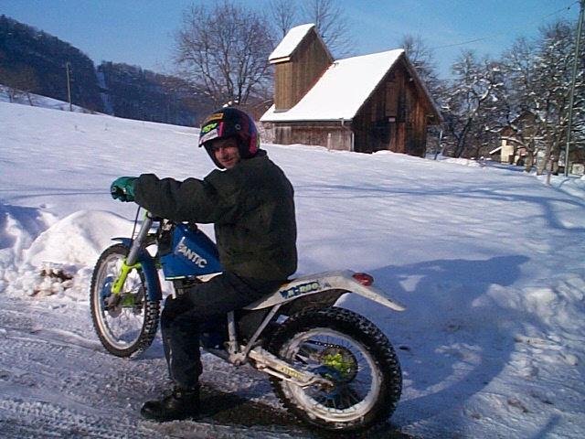

Them + Me
=
WE
Break the mythic border
openSUSE mini-summit / SCALE 2015
Ioda-Net Sàrl / +BrunoFriedmann
http://geeko.ioda.net/presentations/them-me-we
cat ME
An interest
is
born
Free software?
Legal!
THEY offer
Me use
KEY

Determine YOUR primary need,
Find YOUR way to fill it.
Start with one!
/HOME

Finding your community ...
/HOME

We believe in ...
THEM?
Do they know there's a problem?
Will they resolve it?
THEM grrrrr
ME move to a better place
KEY
Stick to your choice !
Find how to collaborate.
Start fixing!
Me & Them

Them & Me
Keys
Communication
Interaction
Collaboration
Becoming a Geeko
My soul turns Green
WE ...
Days when...
Damn again THEM ...
Real coders behind this feature
THEM
one
Building
WE...

Awakening, self-control, respect, openness, collaboration.
WE + WE = WE (*)

PostgreSQL
(*) What other result did you expect?
WE x WE = WE (*)

(*) This is not maths, listen the talker :-)
WE ^WE

Feel the freedom
fosdem.org
a bit of YOU

TINMF: There Is No Money Fairy (*)
Credits to Michael Meeks, Collabora / LibreOffice
Only one Future
freedom
Credits:
- Fosdem organization (banner)
- KDE community (postcard wish)
- openSUSE community (we believe in), (background)
- PostgreSQL community (logo)
- Mapserver community (logo)
- Joshua Deney for Tiny Buddha
- iprcenter.org (piracy)
- Michael Meeks (TINMF concept)
- Bruno Friedmann & Françoise Wybrecht (all the rest)